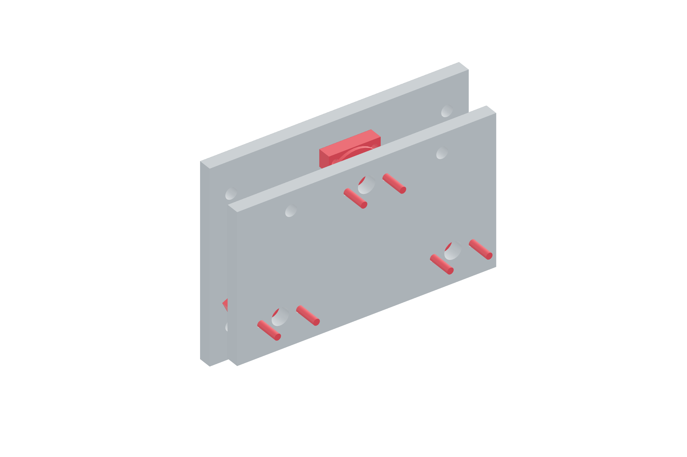

Payload / transverse release94 / 179
Register three hardened V seats
Three hardened balls seat against three pairs of hardened dowels. The metal contact geometry defines repeatable seating; aluminum is kept out of the ball contact.
AddGun-release-back / tray · 3 hardened balls · 6 dowels · 3 steel ball backing washers · metal keepers · locating compound · 6 M3 × 20 backing bolts · 12 M3 × 25 keeper bolts
Tools / setupClean metal faces · washer drilling projection · clamped cure fixture

- Mount paired dowels at the three governed seat stations with 6 mm center spacing; retain them with the metal keepers.
- Drill each steel backing washer’s two Ø3.4 mm keeper holes on 18 mm pitch. Its existing 6 mm bore supports the 8 mm ball; mount it behind the release-back pocket.
- Locate the balls against their steel backing seats. Cure locating compound according to its label with the assembly supported.
- Bring the tray into all three V seats by hand; check full metal contact without forcing the backplates.
- Lift and reseat repeatedly before magnets are adjusted. Record any rocking or contact that changes with reseating.
Ready when
All three balls contact their hardened dowel pairs simultaneously and the supported tray returns without rocking. A ball touching aluminum, loose dowel or inconsistent seat fails registration. Correct the contact geometry/keeper before assigning release force.